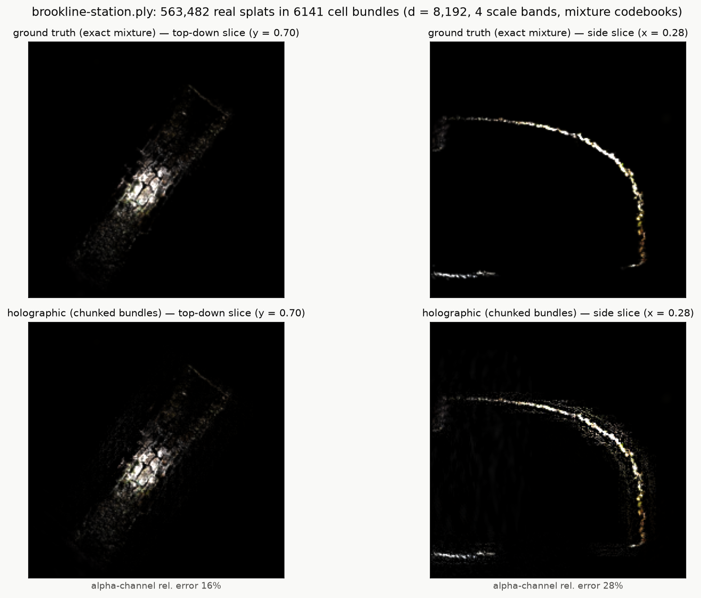
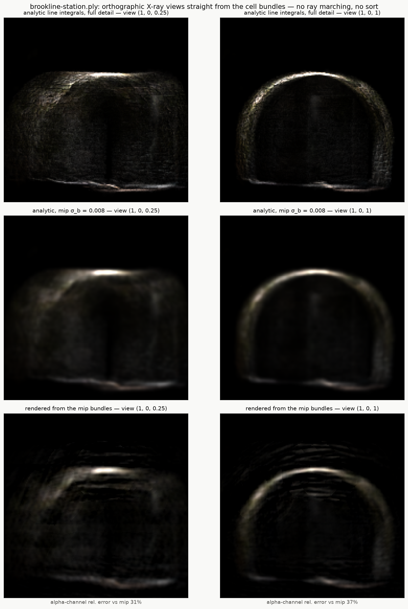

The scan, as a hologram
Every scan in this gallery is a cloud of hundreds of thousands of Gaussians. This page shows the Brookline Station scan after a different trick: the whole cloud encoded into a handful of fixed-size hypervector bundles — a holographic representation in the holo library's sense, where every splat is superposed into the same vectors and read back by algebra.
What makes it interesting is not fidelity — a splat file is far smaller and exact. It's that the bundles can be queried: slices and X-ray projections fall out of the vectors in closed form (no rasterizer, no sorting), and the same algebra supports asking what is at a location, merging two people's scans of one place, and syncing scenes like documents. The renders below are read straight out of the bundles, next to the exact ground truth they approximate.


Method, measured error, and every number behind this live in the library's own pages: real-scenes.md and render.md.